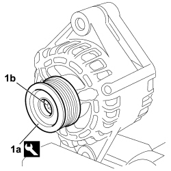

5530A30 ALTERNATOR PULLEY OR FAN - R+R WITH ALTERNATOR REMOVED
- Path
- Procedures > 55 ELECTRICAL EQUIPMENT > 5530 CURRENT GENERATOR > 5530A alternator and components > 5530A30 ALTERNATOR PULLEY OR FAN - R+R WITH ALTERNATOR REMOVED
- Kind
- repair procedure (removal / refitting; the operation number is the code)
- Applies to
- engines: 1.4 8v; all production periods
- Interactive page
- https://sloeber94.github.io/elrnDB-fDbl/en/#/223000159
Applies to: engines: 1.4 8v; all production periods
 Removing
Removing
 Refitting
Refitting- Take the alternator to the bench.
1. Use the appropriate tool to prise protective cover (1a) off pulley (1b).

Applies to: engines: 1.4 8v; all production periods
1. Using the appropriate tool, lock the rotation of the pulley using the tool (1a) and undo the fixing bolt (1b).

Applies to: engines: 1.4 8v; all production periods
Refitting
Removing- Check that the pulley and the pulley protective cover are undamaged.
- Fit the pulley to the alternator shaft.
- Tighten the pulley bolt, lock rotation using the appropriate tool and tighten to the specified torque.
- Fit the protective cover to the pulley.